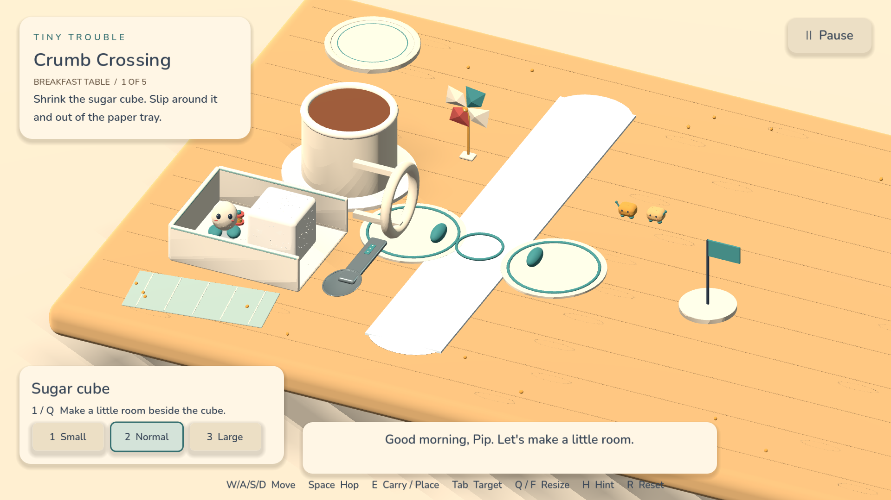
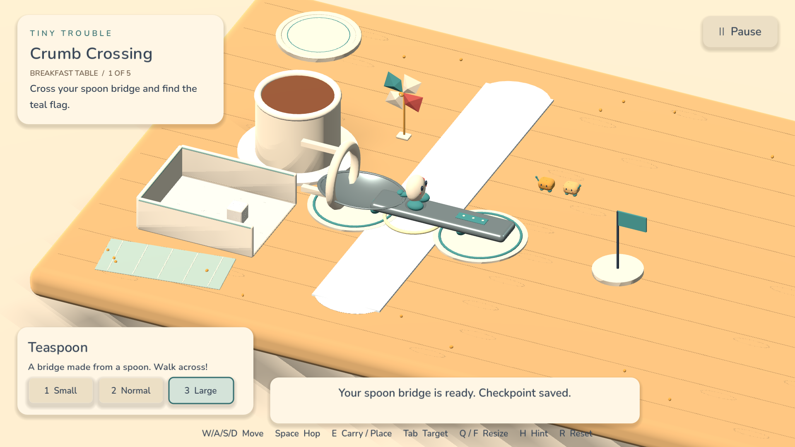
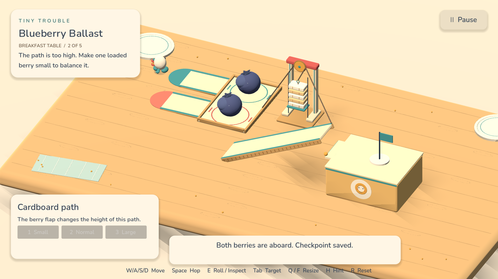
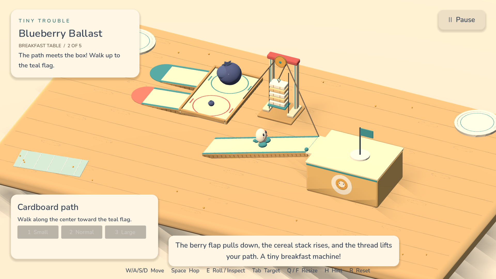
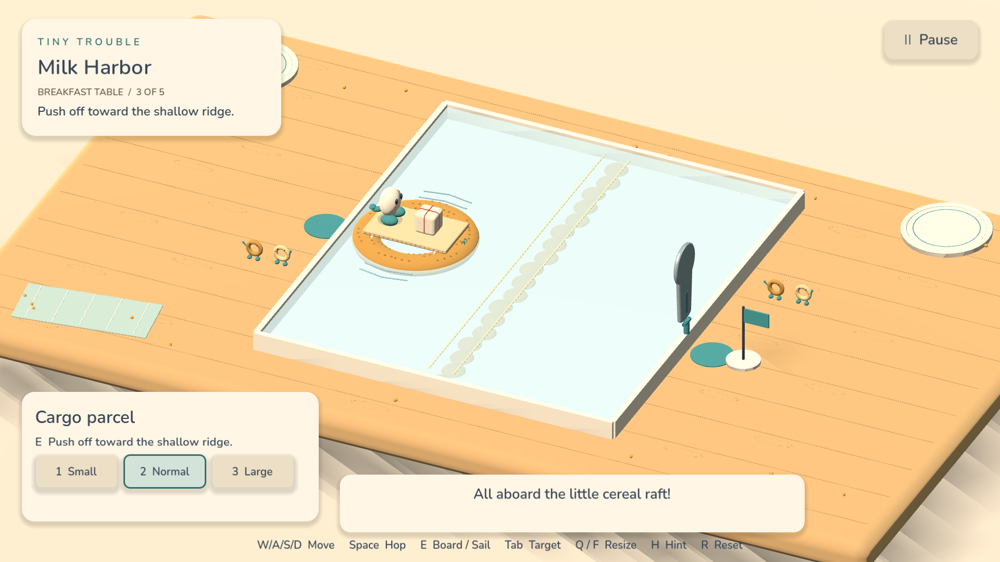
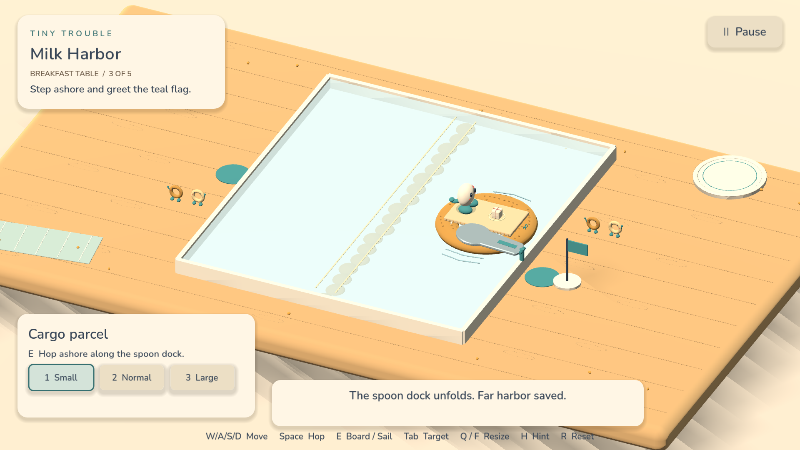
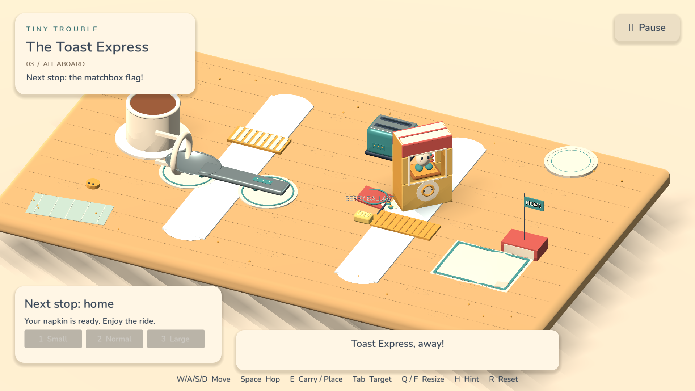

0.2.7 · BREAKFAST PREVIEW
Tiny Trouble
Small changes. Enormous possibilities. Help Pip turn familiar breakfast objects into bridges, counterweights and an unlikely ride home.
Three chapter stages plus the original standalone demo. The full campaign is unfinished. Human playtests and presentation/audio approval remain pending. Windows is exported and structurally verified, awaiting Windows execution. Mac is ad-hoc signed and unnotarized. No commercial launch or profitability claim.
26.12 seconds of actual exported-app gameplay, normal speed with original audio. Generated controls do not establish human pacing. Media provenance.
A better first visit
Open directly into Pip's Workshop. Continue the next unfinished stage, adjust sound/text/controls before playing, and return from settings with Escape. Key-remapping feedback stays inside its correctly fitted panel. Existing saved adventures remain available.
Verified locally
Actual gameplay

crumb crossing
spoon bridge
blueberry ballast
balanced crossing
milk harbor
spoon dock
toast expressStore and pricing draft · Release preparation · Changes and retained failures · Player protocol